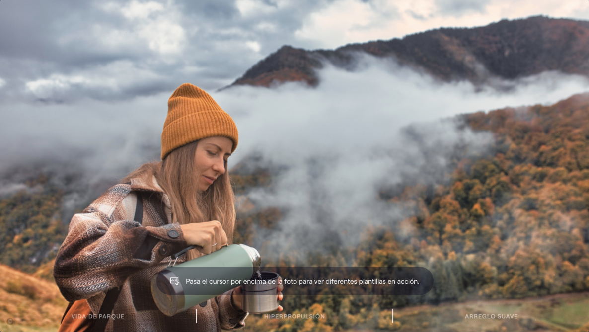
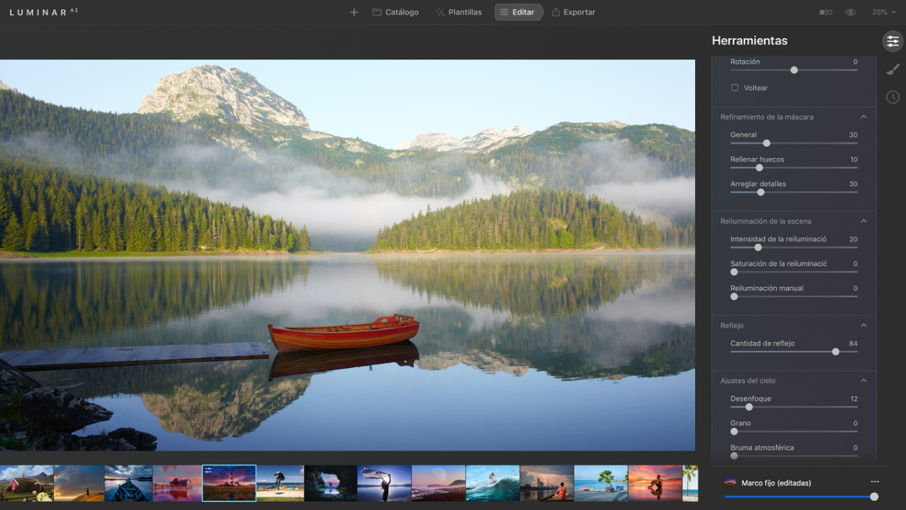

El primer editor completamente potenciado por inteligencia artificial.
Más posibilidades.
Las tecnologías innovadoras dan un nuevo mundo de posibilidades para expresar sus ideas.
Menos rutina
La IA se ocupa de las tareas aburridas para que puedas concentrarte en tu historia creativa.
Sin barreras de aprendizaje.
Tanto si has sido fotógrafo durante 20 años o 20 segundos, obtendrás resultados increíbles desde el principio.
La manera más rápida de hacer fotos increíbles
Conoce las Plantillas con Asistencia de la IA.
La IA sugiere las plantillas perfectas para cada imagen.
Así que no necesitas pasar horas eligiendo.
Un estilo perfecto en 12 segundos
La imagen es analizada
Las Plantillas son sugeridas
Aplica a una serie
Consigue un estilo unificado
¿Viajaste 100 millas pero tuviste mal tiempo?
Destaca los detalles
Cambia el cielo
Añade Atmósfera
Paisaje perfecto
cuerpo
iris
rostro
piel
acento
bokeh
atmósfera
estructura
cielo
composición
LuminarAI
Comienza tu experiencia
Una aplicación y extensión. Para macOS y Windows.
Preguntas Frecuentes
¿LuminarAI procesa archivos RAW?
¡Claro! El procesamiento de RAW de LuminarAI está basado en nuestro propio y poderoso motor RAW. Actualizamos regularmente nuestra biblioteca y hacemos nuestras propias mejoras para proporcionar un soporte perfecto para las nuevas cámaras. Puedes consultar la lista completa de cámaras soportadas aquí.
¿Seré capaz de migrar mis Looks de Luminar 4 a LuminarAI?
¡Claro! El procesamiento de RAW de LuminarAI está basado en nuestro propio y poderoso motor RAW. Actualizamos regularmente nuestra biblioteca y hacemos nuestras propias mejoras para proporcionar un soporte perfecto para las nuevas cámaras. Puedes consultar la lista completa de cámaras soportadas aquí.
¿Funcionará LuminarAI en Macs con procesadores Apple Silicon?
¡Claro! El procesamiento de RAW de LuminarAI está basado en nuestro propio y poderoso motor RAW. Actualizamos regularmente nuestra biblioteca y hacemos nuestras propias mejoras para proporcionar un soporte perfecto para las nuevas cámaras. Puedes consultar la lista completa de cámaras soportadas aquí.
¿Cómo activar LuminarAI?
¡Claro! El procesamiento de RAW de LuminarAI está basado en nuestro propio y poderoso motor RAW. Actualizamos regularmente nuestra biblioteca y hacemos nuestras propias mejoras para proporcionar un soporte perfecto para las nuevas cámaras. Puedes consultar la lista completa de cámaras soportadas aquí.
¿Dónde puedo descargar LuminarAI?
¡Claro! El procesamiento de RAW de LuminarAI está basado en nuestro propio y poderoso motor RAW. Actualizamos regularmente nuestra biblioteca y hacemos nuestras propias mejoras para proporcionar un soporte perfecto para las nuevas cámaras. Puedes consultar la lista completa de cámaras soportadas aquí.